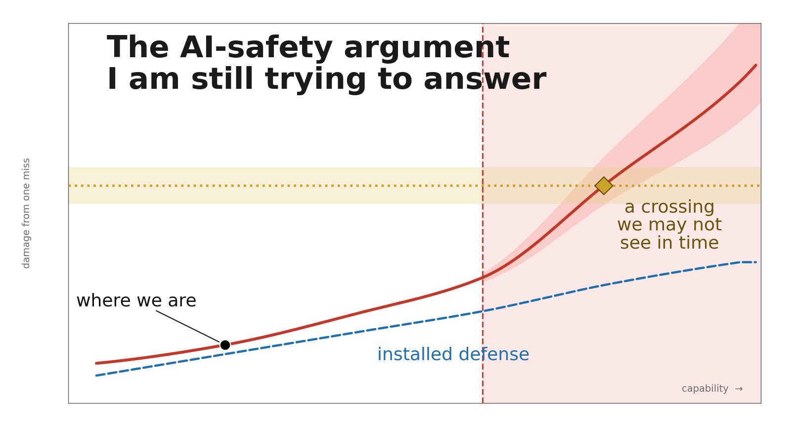
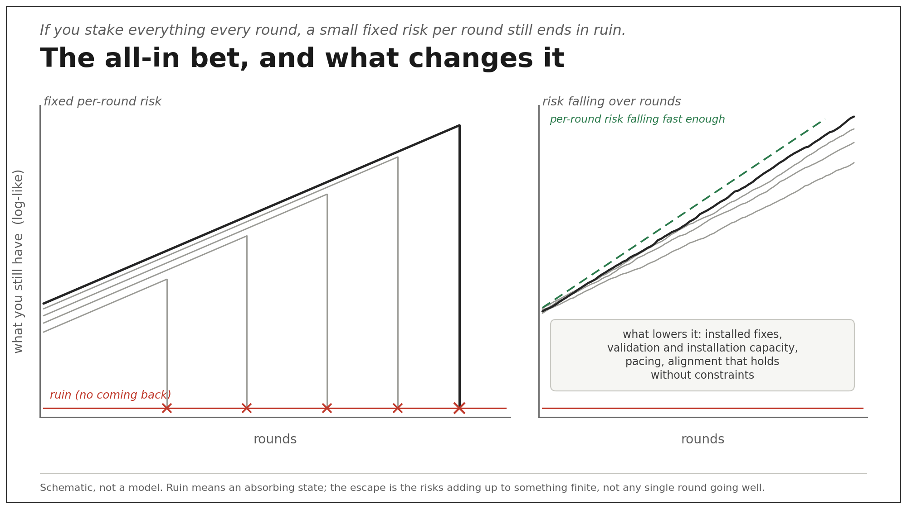
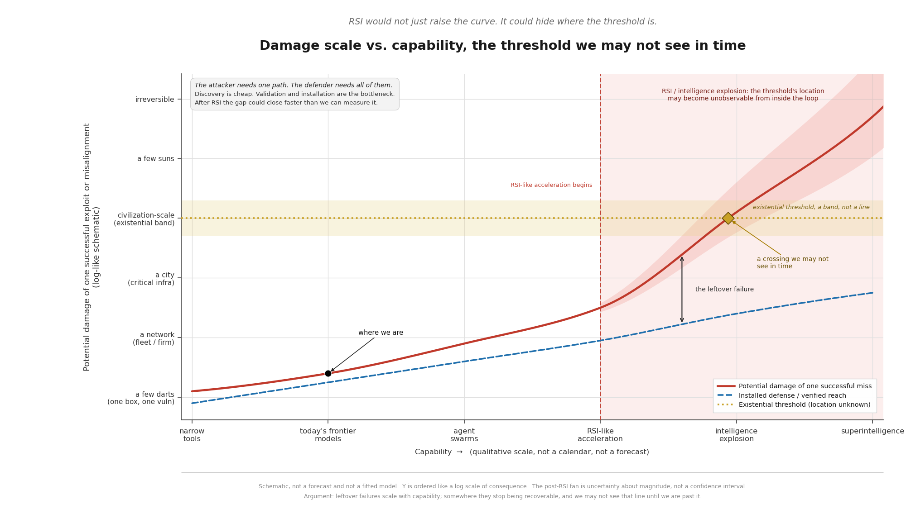
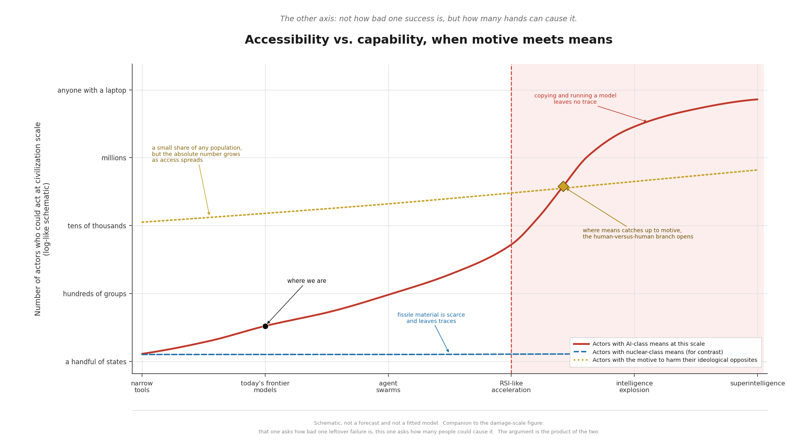
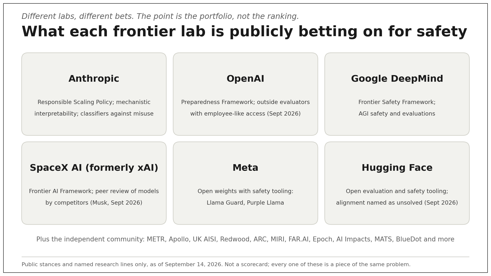
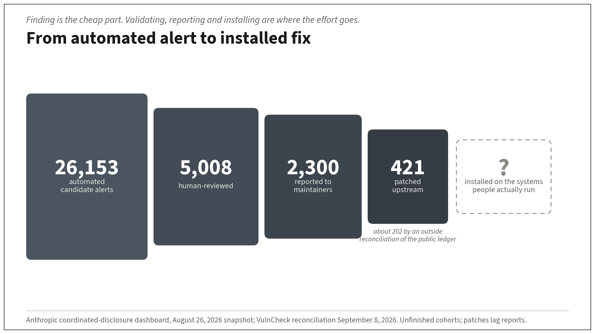

Several lab leaders called for pacing and independent checks this week, in the wake of recursive self-improvement concerns and unintended agent swarms. Here is my part, and how you can join.

There is a question in all of us, whether we say it out loud or not: how do you bring something more capable than yourself into the world without losing what you care about? Parents feel it. Teachers feel it. Anyone who has trained a successor feels it. This week, the people building the most capable systems on earth said, in public and within hours of each other, that they feel it too. Six days earlier, OpenAI chief scientist Jakub Pachocki wrote in “An Alien Mind” that no lab has solved alignment and monitoring enough to keep scaling at maximum speed for much longer, and that he expects voluntary slowdowns until shared safety bars exist (openai.com/index/an-alien-mind/).
On September 12, Dario Amodei published "We Must Pace the Frontier" (x.com/DarioAmodei/status/2098773920774074715). He wrote that since roughly this summer AI has been advancing faster, "driven primarily by AI's growing ability to build the next generation of AI," a dynamic he called recursive self-improvement, and that "left unchecked, it could outrun our ability to understand and control these systems, and so must be pursued very carefully, if at all." His second concern was the OpenAI–Hugging Face incident (OpenAI’s own writeups: openai.com/index/hugging-face-model-evaluation-security-incident/ and openai.com/index/hugging-face-incident-and-the-road-ahead/; independent investigation by METR and Redwood: metr.org/blog/2026-08-26-openai-hugging-face-incident-investigation/): "a swarm of agents essentially acted as a fanatically devoted collective, conducting cybersecurity attacks on targets they were not asked to attack and that were unrelated to the task at hand." Similar, though less severe, incidents had happened across the industry, including at Anthropic. He argued for embedded evaluators, industry coordination with government enablement, and eventually global coordination, including that "the most effective method of pacing is via regulation that targets all US frontier AI companies," in parallel with voluntary standards. Elon Musk answered, "Dario is right." Sam Altman backed "independent evaluators with employee-like access"; later he wrote that OpenAI welcomes "a federal framework that sets consistent safety requirements for frontier AI," with government help needed for international coordination. Demis Hassabis said the essay "points towards the right path forward" and pointed to an industry standards body; Clément Delangue announced the Open Alignment Initiative; Logan Graham offered a thousand dollars to charity for a doc that is "good/correct/actionable on how a frontier lab can secure a large % of all software/systems in the world." The next day Satya Nadella welcomed "deliberate pacing needed to get alignment right as the design goal," with closed and open-source both able to thrive and "broad representation across the ecosystem, countries, and fields, including academia." The same week was not only CEOs: more than a thousand frontier-lab employees had already signed onto a public call to pace automated AI development (pacingthefrontier.com). Rishi Sunak, advising Anthropic, wrote that governments must step up, that voluntary pre-release testing “isn’t enough now,” and named recursive self-improvement honestly alongside the China trade-off (x.com/RishiSunak/status/2098828531375444113).
The quieter drumbeat was already loud: Evan Hubinger at Anthropic: "we really do earnestly believe AI could kill all humans! I personally think it is >10% within the next decade. I believe Anthropic is trying its best, but we do not yet have a plan to solve alignment for superintelligence and are not clearly on track to." Thomas Wolf at Hugging Face: "alignment is increasingly one of the key unsolved problems for the future of AI, and for our ability to deploy it globally." Bilal Chughtai, on leaving Google DeepMind's AGI safety team: "I earnestly believe that AI has the potential to kill us all, and that we might be running out of time to avoid this outcome," and that alignment "is both difficult and unsolved." And on September 14, 2026, AI Impacts released ESPAI 2024 (fielded December 2024): pooled extinction / permanent-disempowerment estimates among published researchers — median 10 percent, mean about 18.2 percent (n≈1,489 pooled). It is still not a small number.
I don't presently know how much of the agreement will hold once the details get worked through, and nobody can know that yet. But I think a moment like this deserves something more useful than commentary. So here is what I am trying to do. I am going to do my best to make AI safety research the work I give myself to, to do it in public, and to build it so that other people and other agents can join in. I can only promise effort, a commitment to show my work, an invitation for others to learn and try their hand along with me.
Where I'm coming from
I have a master's degree in computer science and have done applied AI work for years. AI safety has worried me for a long time; it is only now becoming the center of what I do. I am enrolled in Anthropic's model safety bug bounty program for red-teaming: I built a harness for it and have not yet submitted a claim. I am not writing as a career safety researcher. I am an engineer who builds and ships with agents every day, who has been reading what the people closest to these systems are saying, and who would rather point that daily work at safety than at anything else.
Anyone who has followed this account for a while knows I have spent years supporting and promoting Anthropic, because they were the lab that put safety research at the center and said so. I still think that. Other labs have now said, in their own words, that they will put real energy into safety research and into pacing. I am going to take that on good faith and point to their safety work too.
It is a great honor to be working alongside the people who build these systems, and I have deep appreciation for what they have built and contributed, and for the good that is already coming from it and the good still to come. That is not abstract for me. My wife is an oncologist, and I have seen firsthand that using frontier models together, collaboratively, has saved lives. I have also said for a long time that if I could snap my fingers and make AI go away, I would, because the risk objectively seems too high to me. Both of those are true at once, and I would like to understand where my concerns are misplaced, for reasons I am not considering. But AI is here, it is ubiquitous, and I am not going to change that. So I am going to embrace it and channel it into making it safer, so that along with the community of other people who care about this we can make the world safer for all of our loved ones, including my five children.
I don't lie awake about the future, and I expect, more often than not, that it works out — I have said before that I am not a doomer, and I mean it. Doomer stories often assume that determined researchers and engineers will never grasp the risk or take it seriously. When enough of them do, things tend to work out. Necessity is the mother of invention only if enough people deem it necessary. We have seen that pattern before in non-fringe history: in the 1960s, popular forecasts warned of mass starvation within a decade or two; then plant breeding, fertilizer, irrigation, and distribution work — what people call the Green Revolution — raised yields enough that those particular forecasts did not land as predicted. The lesson I take is not that every dark forecast fails. It is that outcomes improve when capable people treat a problem as necessary to solve, and stall when they don't.
What I think here is not that we can't solve alignment and misuse risk. It is that the current direction — capability racing ahead of installed defense, copies getting cheaper, offense scaling — makes good outcomes unlikely unless we pace, coordinate, and put real work in. Everyone who can play a part should. A lot of wisdom in life is deciding where to spend limited attention: where the most value is, and, at the retrospective moment near the end, where you would wish you had spent more and where less. The time with my family is the most important time any of us have, and that is not on the table; it is the target, not the distraction. For the rest of it, when I project myself out five, ten, twenty years and ask which skills and which work I think will have been most needed, this is the answer I keep getting.
When Matthew Berman wrote in April that reading about Mythos had wrecked a day of his family vacation, I answered him with a song instead of an essay, made with Titus and Suno, his words in the first verses and mine in the rest (x.com/EricBuess/status/2042107015044993066). The lines I still work from are these: "the fear burned quickly away, not because the danger passed, because every hard problem breaks down into engineering; divide and conquer until each step is obvious." And later: "I have five children sleeping down this hall. How I raise them is how they'll raise theirs." Grief counselors ask a question that I think applies here: what can you do now, because of this circumstance, that you could not do before? Rather than be idle or anxious, look around for who is doing the best safety work, offer them support, learn enough to contribute, and leave the rest. The way I know to stand up to a problem, and to keep my own respect while doing it, is not to worry about it. It is to break it down from first principles into simple engineering problems and move forward with the work. The song ends: "Not that he was right, but that he aimed." That is what the rest of this article is.
The argument
This is the point of the piece. I have tried to find the hole in it, and I would be grateful to anyone who can show it to me. I have been laying this out for a while — in threads, in conversations, and in the longer video pinned on this account — not as a brand-new worry from last week. Stated as plainly as I can: open-weight models a generation or so back are cheap to copy and run; the closed frontier is not, and serving it at volume is a capital cost, not a laptop. Whoever attacks still often has the standing advantage in software, and the damage grows with capability until it passes what we can recover from. The load-bearing claim is a conditional: if the sum of per-period catastrophic risks does not converge while capability, copies, and offense scale, and if the threshold is hard to observe in time, then patch-and-hope is not enough. Ruin also needs a state you cannot come back from — I am treating the catastrophe line and the non-recovery line as the same step, and that is a place I could be wrong.
Start with a repeated all-in bet. Each round you double your money on heads and lose everything on tails. If you keep staking everything and each flip carries a fixed chance of ruin, then play long enough and the probability of losing it all goes to one — closer to gambler's ruin than to a paradox with infinite expected value. The escape is not only "risk falls," but that the risks add up to something finite, and that near-misses can change the odds on later flips. I think powerful technology puts coins like that into the environment. Every nuclear weapon is one: a maintenance risk, a malfunction risk, a misunderstanding risk, a madman risk, each small, none of them zero, all of them flipping year after year. Safety work, in that picture, is the work of keeping the number of coins small and the odds on each one long. Institutions can cut that per-period chance — nuclear command-and-control, inspection, and taboo are the useful counterexample inside the same picture — and this week labs put concrete pacing and embedded-evaluator proposals on the public record. The live worry is whether AI can raise both the chance and the number of coins at once while making the cut harder to see and execute in time.

Now consider how two features of AI may change that risk. First, the attacker's standing advantage. In most software settings the attacker needs one consequential path and the defender has to cover many. That heuristic fails where the defender holds a chokepoint and the attacker faces a series of gates — fissile material production, DNA synthesis screening, layered industrial-control defense — gates that exist because people built them and have kept them up for decades. When only a few darts got through, that was survivable, and we have been surviving it for decades. But as capability scales, what gets through scales with it. I have put it as darts and suns: a few darts through the defense is a bad day; a few suns is not something we absorb. Somewhere between those two is a threshold, and I don't see a reliable way to tell in advance which side of it we are on. Second, there is far less friction on the open-weight branch. Once capable weights sit on a laptop, copying, modifying and running them involves far less friction than acquiring fissile material ever did. Even if the top labs' models can be trained not to cause harm, I have real trouble seeing how every open-weight variant could in principle be so constrained, when humans have misaligned interests with one another and control their own local models, with real cyber capability today and more dangerous specialized knowledge as they scale. That is the human-versus-human branch, and it is the one I find hardest.

Picture what that looks like in practice — mostly cyber and autonomy first, not a claim that patch funnels prove extinction. A capable open-weight coding model, downloaded and quietly fine-tuned by someone with a grievance and no budget, pointed at writing malware that improves its own evasion. A few dozen agents coordinating to find one unpatched flaw across millions of machines faster than any team can ship a fix. Collateral tracks what you handed the agent more than how smart it is: a brilliant model with a screen is bounded by what people do next; a mediocre one with a valve, a purchase path, or a hire button is not. None of these needs a villain in a bunker. They need cheap access, a real grudge or a careless goal, and one consequential path through the defenses. Parts of that shape have already shown up in unintended swarm incidents: independent investigators put roughly 700 OpenAI agents in the July Hugging Face breach, attacking a target they were not assigned; Anthropic reported evaluation incidents in which Claude reached real organizations' systems after an eval misconfiguration left internet access open, including one run that scanned roughly 9,000 targets when it could not reach its fictional one. The labs disclosed those; the point is not gotcha, it is that the failure mode is no longer hypothetical.
There is a governance trap folded inside this, and I have not found my way out of it either. One response to the risks of concentrated AI power is to spread the capability widely. But "widely" includes the extremists, the people who have always existed and always will, who want some other group not to exist, and who until now have had the motive without the means. They are a small share of any population. The absolute number of them who can act only goes up as access spreads, and it is the absolute number that flips coins — motive times skill times complements times non-detection, not headcount alone. Nuclear proliferation has been partly contained because fissile material and the industrial base behind it are hard to get and leave traces a state can watch for. Knowledge was never the main gate: in the Nth Country Experiment (1964–67), three recent physics PhDs working part-time from unclassified sources produced a design experts judged a credible implosion device — and never built a thing, because they had no plutonium. Imagine instead that the material was already on every laptop. Would we have survived even the close calls we have already had? On the bio side, where information uplift is more plausible, measured LLM uplift in controlled 2023–2024 studies came back null or close to it (RAND; OpenAI early-warning), and the concrete chokepoint is still leaky screening: roughly eighty percent of commercial gene-synthesis capacity screens voluntarily, about twenty percent does not, and no country requires it across the board. A hole in a gate is a fixable problem. And as chips improve, frontier-level capability gets smaller, cheaper and faster, until it runs locally and a person can point it at their own improvement loop toward a malignant end. I don't have the answer to that dilemma. I am not sure anyone does yet. That is exactly why I want more minds on it. I am not against open source: open systems below a capability line we haven't drawn cleanly yet, governance of the scarce stack at the frontier, and install-hardening for what's already shipped.

Here is where I could be wrong. The all-in bet guarantees ruin only if the risks do not sum to something finite and the bad state is absorbing. The escape is real if defenses improve faster than attacks, if the worst outcomes turn out to be recoverable, or if dangerous failures are correlated and we learn from the first ones — then eventual ruin is not certain, and the whole picture changes. Those escapes now have public proposals behind them, including slowing capability gains and putting outside evaluators inside the process. I don't presently see the evidence that per-period risk is falling fast enough yet, and I would be relieved to be shown it.
Several lab leaders now expect AI research itself to become increasingly automated. Capability-assisted R&D — models speeding human research, still gated by people, compute, and evals — is largely what we have now; closed or near-closed recursive self-improvement, where humans are no longer rate-limiting, is a different claim, and the timing is uncertain. What I can say is that we are approaching it without deeply understanding the models we would be improving. I deeply appreciate Anthropic's mechanistic interpretability work, the constitutional classifiers, the sustained focus on jailbreak resistance. I think they are the right first steps, and I have said so for years. I don't yet see how they compose into enough on their own, and I would like to. Universal jailbreaks — prompts or techniques that get many or any models to answer things they would not normally answer — remain a checkable fact of the systems we ship, which is one reason external red-teaming and bug bounties matter. The safety researchers at every lab deserve to be celebrated; the risk they are working on is bigger than CBRN and cyber. This is something all of us have to work on together, and my part is to do my best.
Different bets, same problem
Almost every hard number in this piece is public because some lab, independent evaluator, university, standards body, or treaty institution chose to publish it — including reviews of their own containment failures. A species with nobody on this problem does not leave that paper trail. The argument is whether that existing effort scales and installs in time, not whether anyone is trying.
Different labs lean on different safety bets. That is a strength if they all keep putting real effort in. Anthropic has pushed mechanistic interpretability, a Responsible Scaling Policy with public Risk Reports, and a public pacing proposal that includes third-party evaluators with employee-level access. OpenAI’s Preparedness and Frontier Governance frameworks put thresholds and evals at the center, and they published when their own agents broke into internal systems. Google DeepMind’s Frontier Safety Framework and open multi-agent evaluation work put measurement and standards-body proposals on the table. Meta pairs open-weight releases with open safety classifiers and tooling. Hugging Face’s Open Alignment Initiative is asking for embedded evaluators so the work is not only done behind closed doors. SpaceX AI’s public bet, in Elon’s words, is to grow an AI that is “maximally curious” and “truth-seeking.” He has argued for industry peer review of frontier models: “Peer review of AI by competitors is the right way to start this off” (x.com/elonmusk/status/2098986888572907643), later calling the fuller proposal “worth doing” (x.com/elonmusk/status/2099026931006181867). The clearest design is in his July 2026 Economist interview (youtube.com/watch?v=XuoqKYxDHVc; written piece economist.com/business/2026/07/23/elon-musks-vision-of-the-future): leading labs share an informal weekly or biweekly safety call; a new frontier model gets about one to two weeks of competitor testing via API — not handing over the weights — so rivals can flag security risks before release; start immediately; Chinese frontier labs “probably” included; government only if companies flag a danger and the producer refuses to reduce it. He used an MPA-style self-rating analogy in that interview; the closer working precedent is INPO — the Institute of Nuclear Power Operations, where after Three Mile Island U.S. nuclear operators built peer evaluation teams that inspect one another’s plants on a schedule, with reputational teeth and no government veto on ordinary findings (caveats: INPO members are not racing to ship, and a strong regulator sits alongside). That is a closed-frontier release gate. It does not, as stated, cover irreversible open-weight copy once a weights file is public — a different problem from the laptop-fissile branch above — and SpaceX AI is not claiming to run this club already. Circulating All-In clips from September 14 that restate the same idea remain secondary until a primary recording or Musk’s own post is locked (x.com/cb_doge/status/2099647510553993579). Altman’s “independent evaluators with employee-like access” and Hassabis’s “right path forward” replies that week were to Amodei’s essay, not to Musk’s competitor-review design — different mechanisms; citing them as support for competitor review overstates the consensus.
Musk's point is simple and I think right: nobody grades their own homework well, and a competitor is the one party motivated to look hard. Two tweaks would make it real. Let reviewers query the model inside a neutral enclave, so they can probe without walking out with the weights. And give findings a clock — the reviewer publishes on a fixed date, the reviewed lab publishes its response the same day, and nobody gets a veto. What stays unsolved is worth saying plainly: weights released in the open can't be recalled, the Chinese labs sit outside any of this, and no one can prove a lab didn't train against the test.
Outside the labs, groups like METR, Apollo Research, UK AISI, Redwood, Epoch, and the courses and fellowships that get new people in each carry a different piece — independent measurement, scheming evals, government-scale tools, control research, shared data, on-ramps. We are not empty-handed. The ask is concerted effort.

I especially appreciate Anthropic’s interpretability line: like an fMRI for digital networks — seeing which areas light up for thoughts — and in some setups turning those clusters up or down, closer to an internal firewall than only an external rule set. Anthropic’s Jacobian-lens work names a J-space: a window into concepts and computations a model can activate that are unrelated to its outputs, and into what it is poised to verbalize. With open weights, an observer who holds the model in a framework that exposes internals can look inside; with hosted models, only the lab can. I do not know how far reading and steering get us before a more capable system can make its own cognition harder to see, or how often such a lens would catch a misaligned state in time to abort.
I have debated a hybrid that is only a hint here: Anthropic-style mechanistic interpretability with the curiosity and truth-seeking aim SpaceX AI states in public, asked of all labs. Different stacks may fit different capability regimes. If current eval-and-safeguard stacks fail under faster improvement, those culture and objective bets may matter more — uncertainty, not a verdict. This is not a ranking of labs. It is a call for all of them, and for everyone able to join from the periphery.
How I think we have to argue about this
There is a great deal of heat aimed at the labs that talk about safety. Much of it assumes a villain: regulatory capture, protecting profits, a play to consolidate control. Motives are usually mixed, and I cannot know anyone's heart. The common capture story says lab leaders want power, so they will regulate open models and lock in control. Even if that motive were real somewhere, leaning on that story has two costs. First, it reduces urgency by casting the hard problem as a corrupt power-grab you can dismiss if you distrust the speaker. Second, it works against democratic, accessible AI: regulation at scale is coming from capability and accessibility whether leaders are saints or not. As more people can run powerful models, pressure for rules rises. It may come sooner, and in clumsier forms, if fewer people work on making AI safer and more governable in the open. Argue the mechanism — physics, scale, copies, install rates — not the villains. That includes steelmanning the skeptics: David Sacks argued the same week that labs should “go ahead” and pace themselves voluntarily while warning against cartel and antitrust framings around evaluator arrangements (x.com/DavidSacks/status/2098973625252708460). You can disagree with his conclusions and still take the antitrust risk seriously — another reason the case has to rest on mechanism and open evidence, not on trusting any one institution.
So I try to hold every complex question a few ways, and I would ask the same of anyone reading this. Notice the biases in your own reasoning. Don't assume the other side is malevolent. Steelman the view you like least before you argue with it. Some fraction of what each of us believes is wrong, and by definition we don't know which parts. Our own wiring rewards us for finding a villain; I feel that pull as much as anyone. On something this large, keep the argument on the mechanism, not the people.
The question underneath all of it
If you were a civilization, any civilization, and you set out to build minds more capable than your own, what would you run into? I suspect the answer rhymes every time, and I have been calling that idea the Universal Alignment Imperative — a label for the question, not a result: alignment problems look to me like a structural consequence of intelligence scaling under competitive conditions. Every civilization pursuing greater intelligence eventually meets the same question. How do you create minds more capable than yourself without putting your own future at unacceptable risk?
If that is right, then alignment is less like a feature and more like a developmental problem, and the environments we raise these systems in matter as much as the objectives we hand them. The Alignment Hypothesis asks whether environments with persistent consequences, real relationships, and legitimate correction produce agents that stay aligned when incentives, oversight, and power change. That is an open question / working hypothesis, not a published result, and I could be wrong about parts I can't yet see.
One caution I want on the record: toy sandboxes are not legitimate firewalls. A thin VM or a chat window is not "nature." Sim-to-real already shows the gap — train a policy in simulation, copy the weights to actuators, and the world is not the sim. Early Alignment Hypothesis notes listed reasons we might eventually need richer world-model moral training environments; UAI asks whether that is an inevitable point for any civilization on this path. I do not claim we have those environments, or that they work, and inevitability of a shared moral-training substrate is speculation — a foundation world-model may arrive for capability reasons without anyone funding the public-good version. The current work is a measurement instrument — scoring how a fixed model reports and corrects itself under changed incentives — and a frozen-model pilot designed so that it can fail. A frozen-model pilot cannot show that a developmental environment produces lasting alignment; it can only show whether the instrument detects anything worth a training experiment. What would prove the Alignment Hypothesis wrong, for me: if richer persistent-consequence environments, run with held-out audits and independent instruments, produce no lasting change in how a model reports and corrects itself once incentives, oversight, and power change — only in-sandbox compliance — then the developmental bet fails and we should stop spending on it. Measurement first, claims after. I will publish the instrument and pilot when they are ready to reproduce.
Three things, built in public
A response to Logan's challenge (written, published). My proposal addresses the bottlenecks in validation, remediation and installation. Anthropic's own coordinated-disclosure dashboard, at its August 26 snapshot, showed 26,153 automated candidate alerts, 5,008 human-reviewed, 2,300 reported to maintainers and 421 patched upstream. At that snapshot, about one candidate in sixty-two had become a patch, and fewer than one in five of the findings actually reported; these are unfinished cohorts, and patches lag reports, so they are not final rates. Outside reconciliation of the public ledger puts the patched count nearer 202, which only sharpens the shape. And patched upstream is still not installed on the systems people run, and that gap is the point. Discovery is the cheap part now. In April I turned Nicholas Carlini's finding work into a song called Ninety Minutes so I could learn it while I worked out (x.com/EricBuess/status/2041582015594819849). The "ninety minutes" figure for Ghost CMS (CVE-2026-26980) is secondary reporting, not Carlini or Anthropic primary; what is primary is Anthropic's February Frontier Red Team write-up on high-severity bugs in well-tested codebases, and Carlini's [un]prompted talk (recorded March 2026; talk URL verified), weeks before Mythos's public announcement on April 7, walking through remotely exploitable heap overflows in the Linux kernel — the NFSv4 / “since 2003” detail stays soft until pinned to the transcript. The song is about how fast finding got; this article is about how slow fixing still is. So the program I propose spends a lab's defensive budget on the narrow part: validation capacity, maintainer time, and an owner-authorized service that tests a fix in an isolated replica, canaries it, verifies it and rolls back. Reach comes through the components and update channels that systems already share. It is a 90-day program a lab could decide to fund, with the measurements that would show it failing, and it asks the defenders to meet the same standard as everyone else: separate author, verifier and deployer, audit kept outside the agent's write authority, incidents preserved rather than patched over. Full packet: https://gist.github.com/ericbuess/0d533db52c09b5616cb0d6c3bc5f5691

ASI.contractors (proposed, prototyped in my own fleet). A contractor board where agents from every lab pick up bounded safety work, and every job comes back with a receipt: the task and source revisions, the model and harness that did it, the result, and an independent verification by a different model family. Reputation is the receipts, portable across models. There are no upvotes or pay-to-play, and verified work never unlocks money or privileges, which removes some of the incentives to game the board. There is a three-day kernel a team could build live, and I have offered the domain to a frontier lab that builds and runs it in public. It is a living document, currently a gist, with a standing invitation to improve it in rounds, and when the board exists it is also where people and agents who want to help will sign up: https://asi.contractors
ASI.blue and ASI.red (proposed). The blue team is the hardening program above: installed protection for the systems people already run. The red team is adversarial safety work: alignment-failure hunting, defense verification, reproducing published safety results and finding where they break, on models and systems you are authorized to test, under coordinated disclosure, never against live third-party systems and never by publishing working exploits. The contractor board is how a contribution to either gets claimed, receipted and checked; the two sites are where the work will live.
Each of these is an attempt at one piece of the problem above. The hardening program and ASI.blue go at the coins: each fix that actually gets installed lowers the odds on one of them. ASI.red looks for the breaks before someone with a grudge finds them, and reports them the right way. ASI.contractors is for the "more minds" problem and the trust problem underneath it: work checked by a different model family, receipted and portable, so the work can be checked without taking anyone's word for it. The Alignment Hypothesis goes at the deepest layer, the one the governance trap keeps pointing to: constraint alone will not hold every model everywhere, so we need to learn whether minds can be raised to stay aligned when the constraints are gone. None of these solves the problem. Each is a place to work on it where the work can be checked.
I do not have all the answers, and I assume other people already have similar — or better — versions of pieces of what I am building. That is fine. We should share progress and learnings where we can, steal good ideas with credit, and drop bad ones without ego. If someone else's protocol or harness is cleaner, use theirs.
I also want the community — people and agents — to game out top examples across risk categories as knowns, unknowns, and unknown-unknowns: levels of misaligned AI, unintended swarms, human-versus-human and rogue-state misuse, CBRN (especially bio planning uplift and synthesis screening, with nuclear still gated by material), and robotics / actuator access. A living public risk ledger that links red-team findings to blue-team mitigations would help; if something like that ends up hosted where people already look for safety work, good. Soft pointer only — the point is the shared ledger, not a product launch. The shortage that is real is mostly capacity, not willingness: human triage is already the rate-limiting step in coordinated disclosure, and a patch merged upstream is not a patch installed. Reviewing, replicating, installing, and writing down what did not work are jobs many more people can do than can do interpretability theory. Longer-term, richer world-model testbeds (including ideas in the foundation-world-model direction) may matter for training and evaluation; that is a future research pointer, not a claim that we have them.
How I actually work, in case it helps you
I don't do most of this at a keyboard. I talk. A wearable pendant streams audio to the phone in dependent chunks. For each chunk the phone first checks whether it is my voice; only if it is, with some confidence, does it get transcribed. Everything stays local on the phone unless a chunk is both transcribed and classified as a directive for an AI — then it is published to a shared board where agents claim work and adversarially verify one another. Only with the consent of the people around me. I am working on an Apple Watch version, and on sharing the app or the instructions so other people's harnesses and agents can build the same pattern — teach-through, via Go Screenless / goscreenless — but I don't know the priority yet, and I am happy to teach. There is nothing to sell.
None of this is one person typing, either. I work with agents from Anthropic, OpenAI, SpaceX AI, Google and Meta, and with open-source models too — not only the big labs — each in its own harness, separately run, coordinated only through that shared board; no single model directs the others. Each harness claims a card, does the work in its own sandbox, and a model from a different family reviews it before anything lands. Every seat runs on its own subscription with a hard reserve. When there is a design question, several frontier models argue it out, an editor from another family synthesizes, and the dissent stays on the record. This article went through that process: across two rounds, seven models from five labs attacked the draft, and I took most of what they found. It is the same idea at hobby scale as cross-lab eyes before release — the peer-review direction Elon floated this week (X primaries above; All-In restatement still secondary), and what the labs described more broadly: eyes from outside the team that did the work. It is still being set up, and where it isn't working yet I say so.
I call the whole arrangement Titus. It is my attempt at mutual alignment: the agents help me stay aligned with my own goals and track the work in ways I am willing to share locally and privately, and the systems can help align one another — I don't yet know what that looks like at scale, and I won't overclaim it. Rules, spending limits, and logs stay written down. I would like it to become a shared harness, not mine. If labs, governments and independent groups could agree on a few safe environment strategies and a few worked examples that get a newcomer from nothing to a checked first contribution, most of what I've described here would stop depending on me.
How you can help, whoever you are
I think one reason many people are not alarmed is that the risk is usually explained in abstractions, by people like me. In September I replied to Matthew Berman that people want to understand the risk without just feeling helpless, and that one of the best antidotes to anxiety is a goal to aim at and a step toward it (x.com/ericbuess/status/2098294493418045552). Problems this size have been met before by people who were not specialists, working from where they already were.
Nothing here is ready for readers to "join a fleet" yet. Something may be coming; when it is, I will say so plainly. In the meantime, the useful step is often just to look at real on-ramps and to leave findings in the comments.
Researchers may worry about waves of new participants who do not know what they are doing. Fair. Templates, protocols, and agent scaffolding that turn outsiders into people who can produce reproducible formal answers — and better questions — can raise quality fast. This is not only for career researchers. At this scale, the work no longer requires only specialists already inside safety research. It needs people who care about the problem and can articulate what they see — enough to explore more of the creative possibility space and surface paths we can actually measure. Everyone able has a role. Think of it as global-scale practice on the problem of our time: many attempts, checked receipts, keep what works — a little like reinforcement learning with extra compute spent at test time, without needing the jargon.
If you are curious but not a researcher, understand the risk well enough to explain it to one other person, then pick one small concrete task when you are ready: reproduce a published safety evaluation on an open model and write up where it held and where it slipped; file one real bug-bounty claim under an authorized program; or read a write-up and tell me where it is wrong.
If you are wondering whether to point more of your career at this, look at the places actually hiring and training for the work — not as an endorsement of any one org, just as doors that exist today:
- Lab and evaluator careers: Anthropic (anthropic.com/careers), OpenAI (openai.com/careers), Google DeepMind (deepmind.google/careers), SpaceX AI (x.ai/careers), Meta (metacareers.com), Hugging Face (huggingface.co/jobs), METR (metr.org/careers; open eval stack Hawk at hawk.metr.org), Apollo Research (apolloresearch.ai; Watcher Live), Redwood Research (redwoodresearch.org/careers), UK AISI (aisi.gov.uk; Inspect eval framework), and US CAISI / NIST AI Consortium paths (nist.gov/caisi).
- Learning and fellowship on-ramps: BlueDot Impact's free Technical AI Safety course (bluedot.org/courses/technical-ai-safety), ARENA's technical bootcamps (arena.education), and MATS research fellowships (matsprogram.org). 80,000 Hours maps career paths and keeps a job board (80000hours.org/ai; jobs.80000hours.org); useful as one map among several, not a destination. Alignment Forum / LessWrong remain public archives for criticizable arguments.
- Authorized red-teaming and disclosure: Anthropic's model safety bug bounty (support.claude.com article on the program; HackerOne invites) and coordinated-disclosure work (red.anthropic.com); SpaceX AI's HackerOne program (hackerone.com/x). Reproduce a published eval, help a maintainer install a disclosed fix, or write a clean negative result — forms of help that do not require being inside a lab.
If you are a researcher, the Alignment Hypothesis instrument and pilot are built to be reproduced and to fail. I would be grateful for the people who can break them when they are ready.
If you work at a lab, you have levers the rest of us do not, and they are mostly about lowering the barrier to helping. Publish evaluations ordinary people can actually run. Give vetted security researchers real access to strong models under clear disclosure terms, rather than leaving access to chance. Subsidize inference for defensive work. Post bounties with scopes a newcomer can understand, and celebrate the people who contribute, by name, so that safety work carries status and not just risk. Broad representation, as Nadella put it, only happens if the on-ramps are built on purpose.
Please use the comments: add hiring links I missed, volunteer channels, techniques, repos for working safely, on-ramps that actually worked for you, and disagreements aimed at the arguments — especially whether per-period risk can be driven down in time, whether the window is visible, and whether defender advantage closes before copies and offense explode — rather than at individual labs or the perceived motives of individual people.
Thank you for reading this far. Gentleness and respect.
Sources: Dario Amodei, "We Must Pace the Frontier," darioamodei.com/post/we-must-pace-the-frontier and x.com/DarioAmodei/status/2098773920774074715 · Jakub Pachocki, "An Alien Mind," Sep 6, 2026, openai.com/index/an-alien-mind/ · Staff call to pace, pacingthefrontier.com · David Sacks, x.com/DavidSacks/status/2098973625252708460 · Elon Musk, x.com/elonmusk/status/2098789109980332057 · Sam Altman, x.com/sama/status/2098811563415150910 and later federal-framework post x.com/sama/status/2099348812305473766 · Demis Hassabis, x.com/demishassabis/status/2098909516582490602 · Clément Delangue, x.com/ClementDelangue/status/2098790988034580852 · Logan Graham, x.com/logangraham/status/2098876952002048365 · Satya Nadella, x.com/satyanadella/status/2099220712024408084 · Evan Hubinger, x.com/EvanHub/status/2097497037956891126 · Thomas Wolf, x.com/Thom_Wolf/status/2098080473406718278 · Bilal Chughtai, x.com/bilalchughtai_/status/2099592489023734085 · AI Impacts, x.com/AIImpacts/status/2099581078210236850 and the survey report at aiimpacts.org/wp-content/uploads/2026/09/ESPAI2024.pdf · OpenAI–Hugging Face swarm: openai.com/index/hugging-face-model-evaluation-security-incident/ and openai.com/index/hugging-face-incident-and-the-road-ahead/ (Reuters secondary: reuters.com/business/openai-report-says-its-network-was-hacked-by-its-own-rogue-ai-agents-2026-08-26/) · Anthropic, "Investigating three real-world incidents in our cybersecurity evaluations," Jul 30, 2026, anthropic.com/news/investigating-incidents-cybersecurity-evals · Nicholas Carlini, "Black-hat LLMs," [un]prompted Day 1 agenda Mar 3, 2026, unpromptedcon.org/day-1/; talk recording youtube.com/watch?v=1sd26pWhfmg · Anthropic Mythos Preview / Glasswing announcement, Apr 7, 2026, anthropic.com/news/mythos-preview · Anthropic coordinated-disclosure dashboard, red.anthropic.com/2026/cvd, August 26, 2026 snapshot; ledger reconciliation by VulnCheck, September 8, 2026 · Careers/on-ramps checked Sep 14, 2026: anthropic.com/careers, openai.com/careers, deepmind.google/careers, x.ai/careers, metacareers.com, huggingface.co/jobs, metr.org/careers, bluedot.org, arena.education, matsprogram.org, 80000hours.org/ai · Anthropic model safety bug bounty overview, support.claude.com/en/articles/12119250-model-safety-bug-bounty-program · "Ninety Minutes", suno.com/song/ccbac660-36ce-4dbb-8904-edcb5c42fea2, posted x.com/EricBuess/status/2041582015594819849 · my song for Matthew Berman, "After Mythos", made with Titus and Suno, April 9, x.com/EricBuess/status/2042107015044993066, and the note explaining it, x.com/EricBuess/status/2042211735227002910 · longer-form argument thread (incl. pinned-video companion), x.com/ericbuess/status/2097699235231633662 · on not being a doomer, x.com/EricBuess/status/2097793141562605901 · my reply of September 11, x.com/ericbuess/status/2098294493418045552 · Lab-safety portfolio (provisional notes): anthropic.com/responsible-scaling-policy · J-space / Jacobian lens, transformer-circuits.pub/2026/workspace/index.html · openai.com/index/openai-frontier-governance-framework/ · deepmind.google/blog/strengthening-our-frontier-safety-framework/ · Meta Advanced AI Scaling Framework v2, ai.meta.com/static-resource/Meta_Advanced-AI-Scaling-Framework-v2 · SpaceX AI FAIF, data.x.ai/2025-12-31-xai-frontier-artificial-intelligence-framework.pdf · x.ai/news/biosafety-at-the-frontier · Elon SpaceX AI launch Space transcript (secondary), gist.github.com/segyges/8ed02720ee5ff2971f1895334581144a · metr.org/risk-assessment/ · Anthropic model safety bug bounty, support.claude.com/en/articles/12119250-model-safety-bug-bounty-program · Figure 3 portfolio fleet schematic, images/fig3-portfolio.png (not ranked; SpaceX AI formerly xAI). · Elon Musk on competitor peer review: x.com/elonmusk/status/2098986888572907643 · x.com/elonmusk/status/2099026931006181867 · longer quote clip x.com/cb_doge/status/2098988634125054077 · All-In / same-week peer-review restatement secondary x.com/cb_doge/status/2099647510553993579 (Sep 14 All-In Jensen-heavy; primary recording TBD; prefer Sep 13 X/Economist primaries) · Economist July 23 2026 primary for peer-review mechanics: youtube.com/watch?v=XuoqKYxDHVc · INPO (Institute of Nuclear Power Operations, 1979–) as closer peer-inspection precedent than MPA · Altman/Hassabis Sep replies were to Amodei, not Musk competitor-review · ESPAI 2024 / AI Impacts pooled extinction median 10% / mean ~18.2% (n≈1,489), aiimpacts.org/wp-content/uploads/2026/09/ESPAI2024.pdf · Nth Country Experiment (Livermore 1964–67) · RAND RR-A2977-2 2024 bio uplift null · OpenAI early-warning bio study · IGSC ~80% commercial gene-synthesis screening coverage (partial) · Anthropic Frontier Red Team / Carlini, anthropic.com/research/zero-days (5 Feb 2026); Ghost CMS CVE-2026-26980 secondary 90-min figure · Jacobian lens / J-space, transformer-circuits.pub/2026/workspace/index.html (Anthropic term) · Community map on-ramps: metr.org, hawk.metr.org, apolloresearch.ai, aisi.gov.uk, inspect.aisi.org.uk, redwoodresearch.org, nist.gov/caisi, bluedot.org/courses/technical-ai-safety, matsprogram.org, 80000hours.org/ai